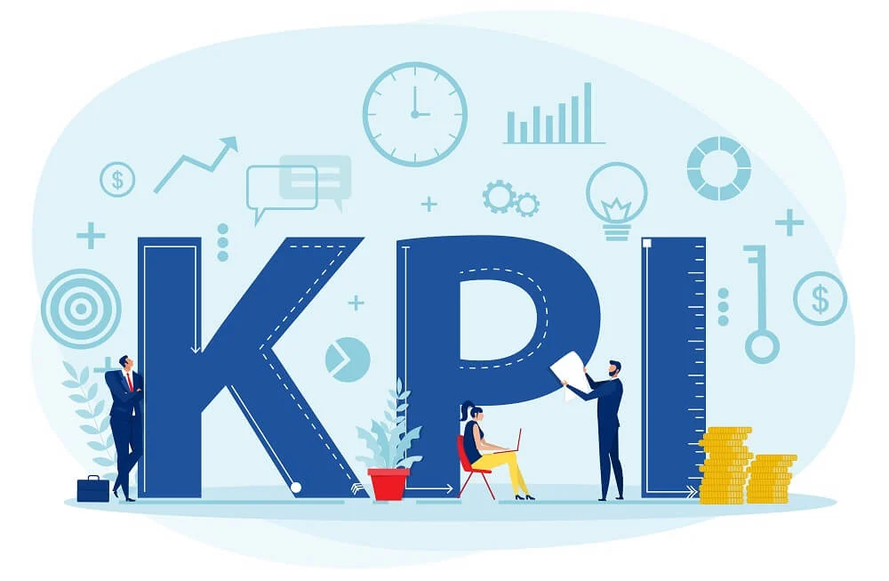
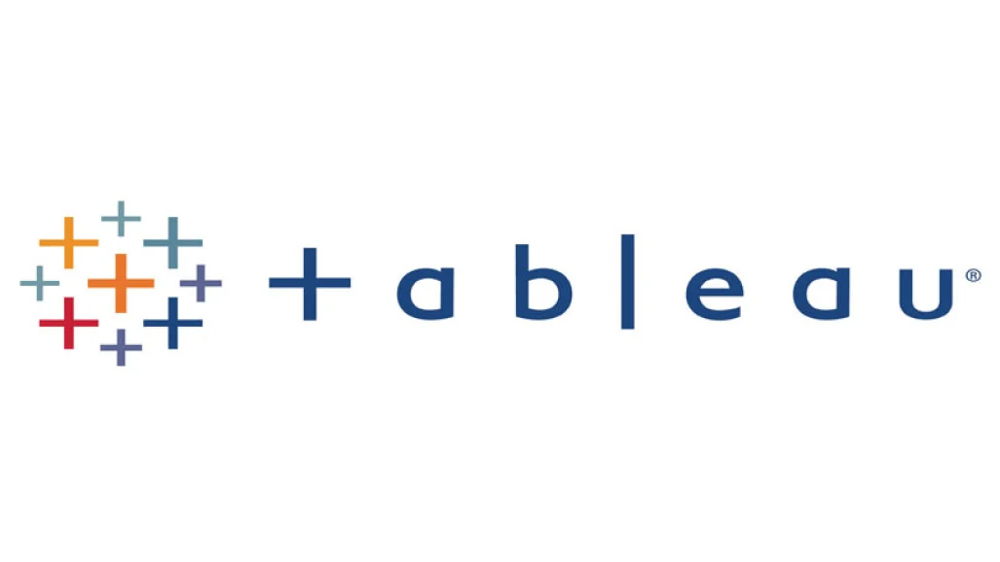
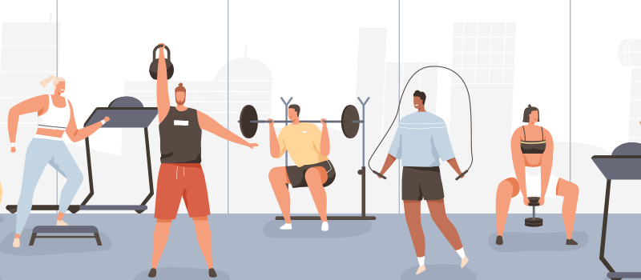

In this project, we analyzed mock data from a telecommunications company by examining the company's key performance indicators (KPIs).
We cleaned the data using Excel and created visualizations with pivot tables to identify the top-performing audiences and the most profitable clients for our client.


We analyzed the 2021 New York City (NYC) crime data obtained from the NYC OpenData website. Using Python, we cleaned the data and created visualizations in Tableau.
Our analysis focused on identifying the most common crimes, crime spikes within each quarter of 2021, and the types of crimes committed in each borough.
Based on our findings, we developed recommendations to help the NYPD allocate resources more effectively across the boroughs.

Analyzed ChemCorp's customer segmentation data using Tableau, creating various types of graphs to visualize the findings. Developed actionable insights and provided stakeholders with recommendations to improve the company's profitability.
Mashable is an international digital media platform covering entertainment, culture, tech, science, and social good. In this project, I utilized Python to import and clean data from Mashable. I created box and whisker plots using Matplotlib and heat maps using Seaborn for exploratory data analysis. I then trained a machine learning model to predict which articles are most likely to attract more clicks, providing valuable insights to increase article popularity.

In this project, I analyzed body performance data obtained from Kaggle. Using Python, I explored and cleaned the data. I created histograms, a correlation matrix, and heat maps to visualize and understand the relationships within the data.

In this case study, I conducted the project using the PHPMyAdmin interface and partially in Jupyter through a Python connection. I addressed a series of questions and solved them using SQL.